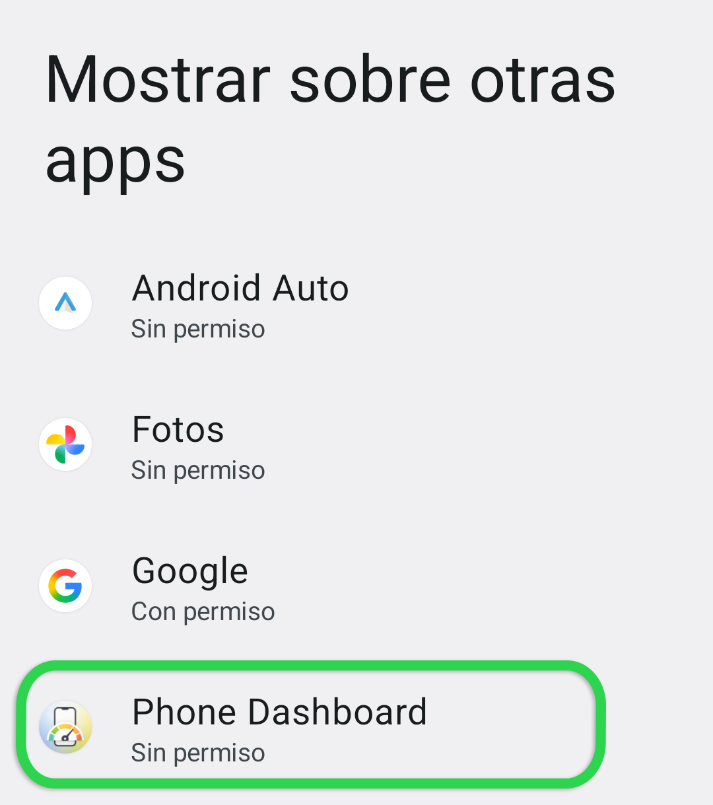
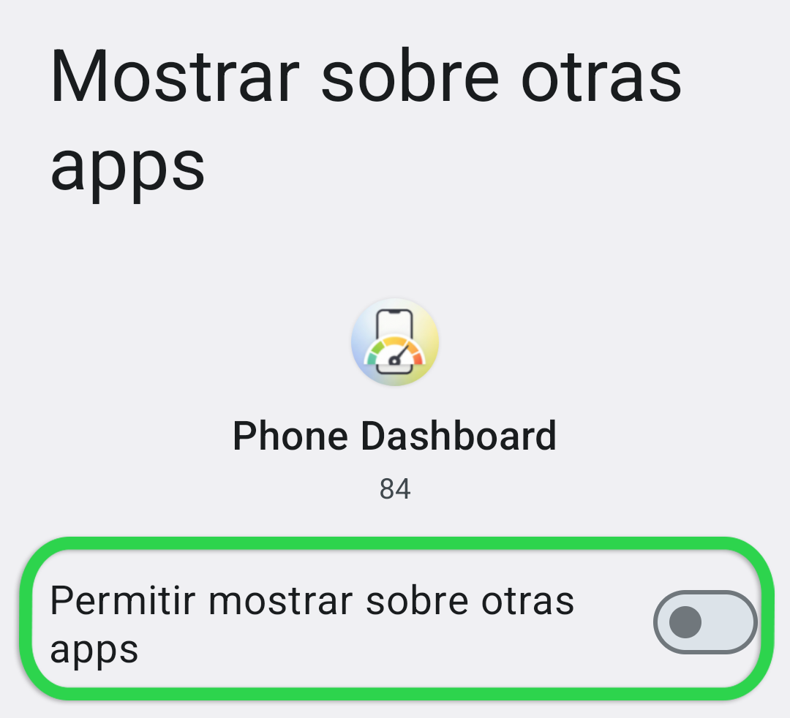

Para funcionar correctamente, Phone Dashboard necesita permiso para dibujar sobre la pantalla.
En la siguiente pantalla, será dirigido a la configuración de su dispositivo para otorgar a Phone Dashboard permiso para dibujar sobre la pantalla. Cuando esté en la pantalla de Mostrar sobre otras aplicaciones, desplácese hacia abajo y seleccione Phone Dashboard.

En la siguiente pantalla después de seleccionar Phone Dashboard, verá un interruptor que dice Permitir mostrar sobre otras aplicaciones. Active ese interruptor para otorgar el permiso.

Una vez que esto esté completo, use el botón de retroceso de Android para volver a esta pantalla y continuar con los siguientes pasos.
Tenga en cuenta que diferentes fabricantes de dispositivos pueden tener pantallas que se ven diferentes. Si tiene problemas para completar este paso, por favor contacte al equipo de investigación para obtener asistencia.